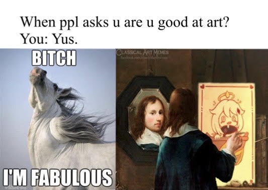

This is just a funny take in Genshin if anyone has played it a backstory was that there is a quest where us the traveler was supposed to make a painting of paimon our floating companion. There is a meme that Paimon in the beginning of the game we were able to choose the option in the dialogue of saying paimon was emergency food. So I guess mihoyo the company that created genshin impact took the opportunity to let us paint this. In the end Albedo another character was able to create a divine sketch of her. But I just find it funny since alot of people who aren't artists would ask us are we good at our work? Or what is our passion. I did a little edit where I included paimon's painting then redrew over it to clean off the text at the bottom to match the painting length and clean off the text of her pot.
